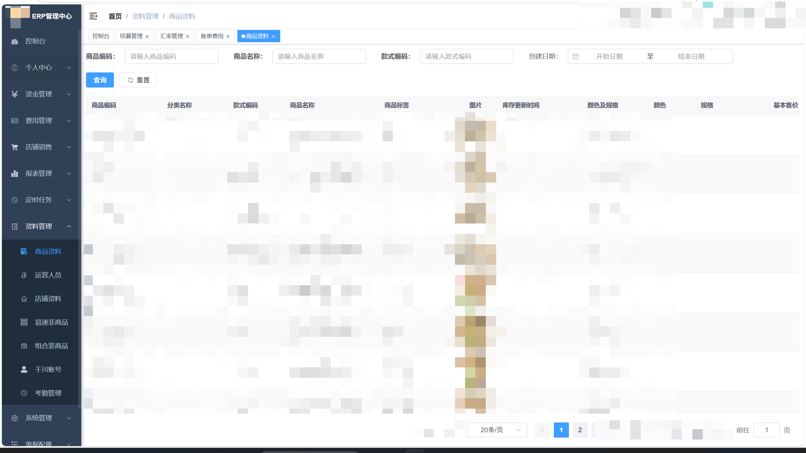
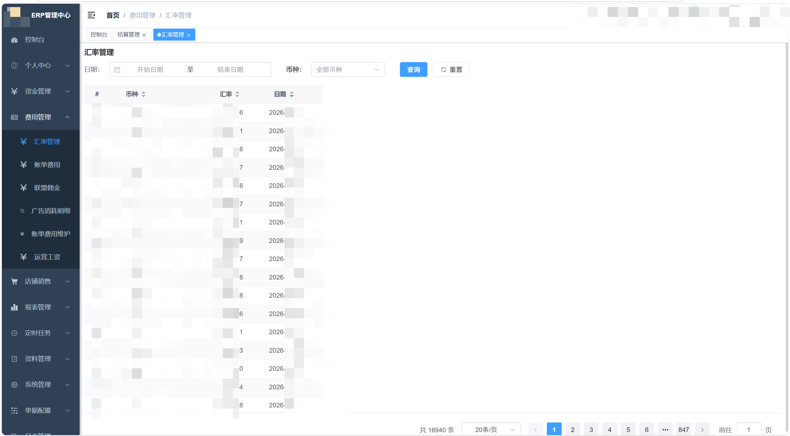
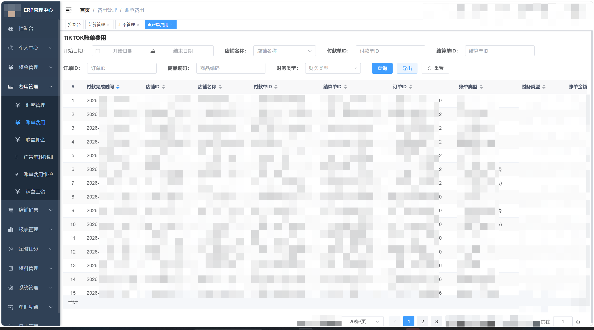
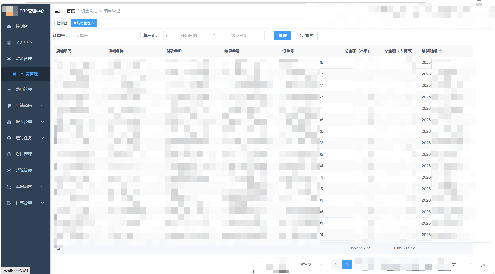
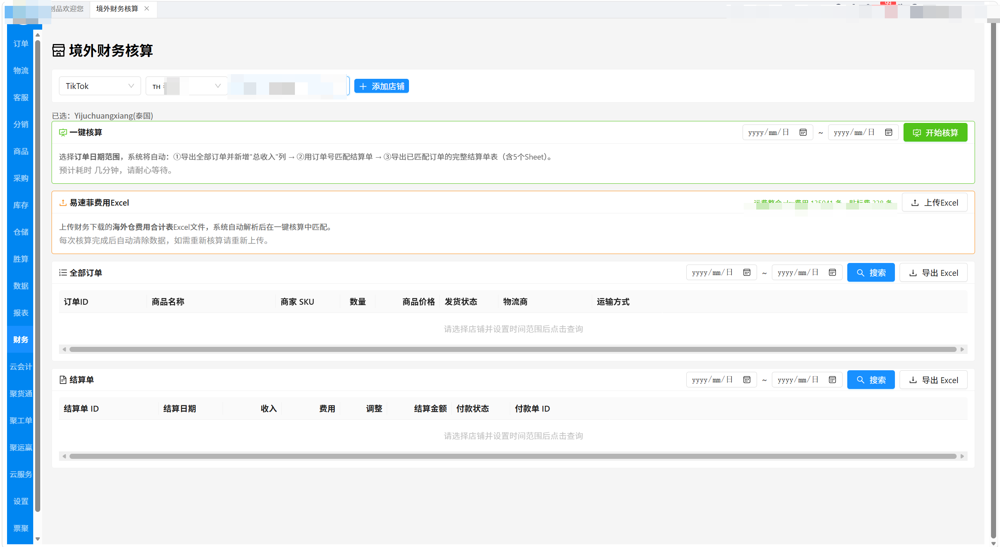
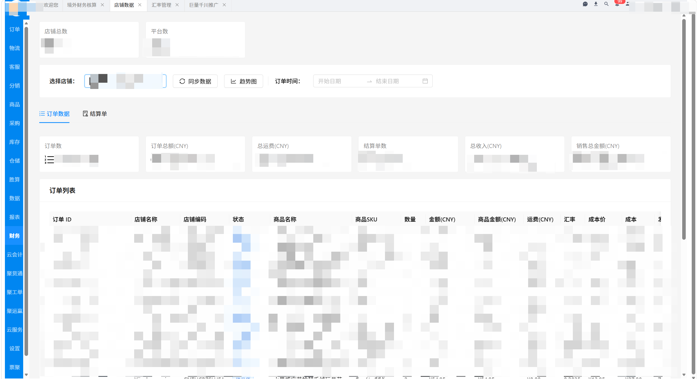
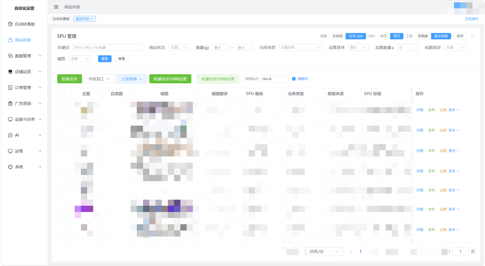
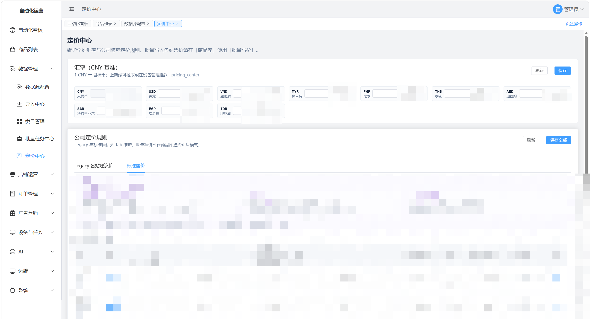
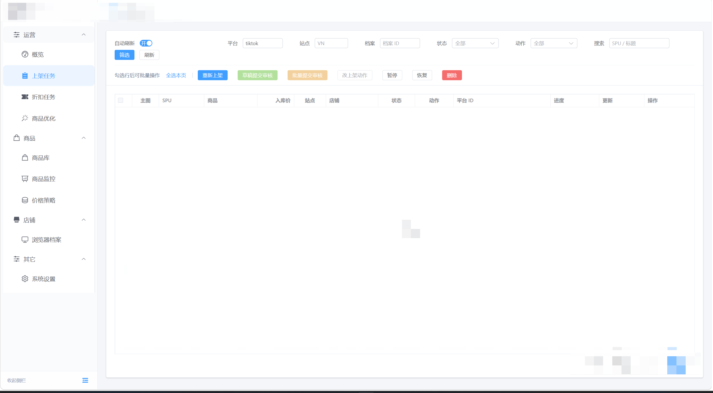

真实界面 · 实际流程 · 持续迭代
01 / BUSINESS SYSTEM
跨境电商 ERP 系统
从存量系统逆向分析，到多平台架构重构。让商品、费用与结算，在同一套系统里协同运转。
业务起点
梳理存量系统与多平台业务，厘清商品、账单与结算之间的关系。
实现路径
重构系统架构，串联商品资料、汇率、平台账单与财务模块。
交付结果
把原本约 30 分钟的财务核算，缩短到约 3.5 分钟。

控制台 Dashboard
从控制台查看经营概况，进入商品、资金与财务等业务模块。


资料管理 · 商品资料
集中维护商品资料，为后续业务处理提供统一的数据基础。


费用管理 · 汇率管理
管理多币种汇率，衔接跨境费用与结算流程。


费用管理 · TikTok 账单费用
查看 TikTok 平台账单与费用数据。


资金管理 · 结算管理
把平台结算放进统一的资金管理流程。


财务模块 · 境外财务核算
在系统内完成境外财务核算，减少重复的手工处理。


数据管理 · 店铺数据
集中管理店铺数据，连接不同平台的业务信息。
02 / AUTOMATION SYSTEM
商品自动化上架系统
从标准商品库到多平台上架任务。用四层微服务架构，把商品、定价与任务调度连接成一条工作流。
业务起点
商品上架涉及资料、价格和平台规则，需要一条连贯的处理流程。
实现路径
用标准商品库承接资料，经过定价中心，再交给上架任务调度。
交付结果
覆盖 TikTok、Shopee、Amazon 与 Temu 的商品上架流程。

自动化看板
从看板进入商品、定价和上架任务，了解自动化系统的整体结构。


商品列表 · SPU 管理
以标准商品库组织商品资料，作为多平台上架的起点。


数据管理 · 定价中心
把商品定价集中到独立模块，连接商品资料与上架流程。


上架任务
查看多平台上架任务，跟进商品发布流程。
03 / IN MOTION
看流程，真正跑起来。
界面之外，看看自动化如何执行任务，以及 AI 如何接进实际业务。
BEHIND THE INTERFACE
界面背后，还有实现的细节。
回到首页，继续了解项目架构、技术选择与工作经历。